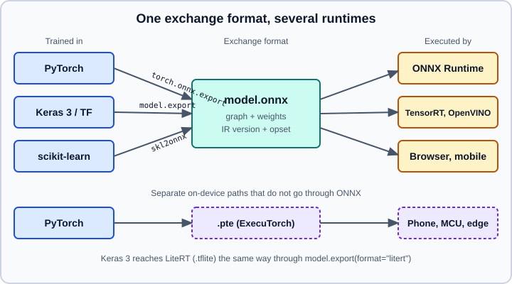

ONNX & Model Interoperability
|
This content was generated with the assistance of AI and should be verified against the official documentation before being relied on in production. |
A trained model is a set of weights plus a description of the computation that uses them. Inside PyTorch that description is Python code; inside Keras it is a layer graph; inside scikit-learn it is a fitted Python object. None of these formats can be read by another framework or by a lightweight production runtime. Interoperability means exporting the computation and the weights into a neutral format that many tools can load. ONNX (Open Neural Network Exchange) is the most widely supported such format, and this page covers it together with the two on-device alternatives, ExecuTorch and LiteRT.
The facts below were checked on 2026-10-30 against Python 3.13, PyTorch 2.15, TensorFlow 2.21 with Keras 3.15 and scikit-learn 1.9. The ONNX versions mentioned are ONNX 1.23.2 (IR version 14, opset 28), ONNX Runtime 1.31.1, skl2onnx 1.20.0 and ExecuTorch 1.5.1. Examples were run on Python 3.13 with PyTorch 2.15 (CPU), Keras 3.15 on TensorFlow 2.21, scikit-learn 1.9.1, ONNX Runtime 1.31.1, onnxscript 0.7.2, tf2onnx 1.17.0, skl2onnx 1.20.0, ExecuTorch 1.5.1 and ai-edge-litert on 2026-11-01; the LiteRT example loaded a file written by model.export(..., format="litert"). Where this gets pinned in practice is covered in Deploying & Serving ML Models; the LLM-specific file formats (GGUF, safetensors, MLX and others) are in Model Formats and quantisation for inference in Quantization for Inference. Compression applied before export is in Model Compression.
What ONNX is
An ONNX file is a Protocol Buffers message that holds four things:
-
A graph: nodes (operators such as
Conv,MatMul,Relu) connected by named tensors, with declared inputs and outputs and their element types and shapes. Dimensions can be symbolic, such as a batch size that is only known at run time. -
Initializers: the trained weights, stored as constant tensors. Files over 2 GB cannot be one Protocol Buffers message, so large models keep their weights in separate external-data files next to the
.onnxfile. -
An IR version: the version of the file format itself (the structure of graphs, tensors and attributes).
-
Opset imports: for each operator domain (
ai.onnxfor the standard operators,ai.onnx.mlfor classical machine-learning operators, plus any custom domains), the operator-set version the graph was written against.
The IR version and the opset are independent. The IR version changes when the file structure changes; an opset is a versioned list of operators with their exact semantics, and it grows with each ONNX release as operators are added or revised. A runtime declares the highest IR version and opset it implements. A model exported with an opset newer than the runtime knows fails to load, which is the most common ONNX error in practice.

Opsets and the runtime lag
ONNX 1.23 defaults to opset 28 and IR version 14. ONNX Runtime does not track ONNX release for release: ONNX Runtime 1.31 is still built against ONNX 1.22, which means opset 27 is the newest it implements, one opset behind what the onnx Python package emits by default. ONNX Runtime’s own compatibility table in its documentation is stale (it stops at ONNX Runtime 1.20), so do not rely on it for current versions. The practical rule is:
-
Do not hard-code an opset. Leave
opset_version(or skl2onnx’starget_opset) unset and let the exporter choose its default, which is usually older than the newest the runtime implements: the PyTorch 2.15 exporter writes opset 20 and skl2onnx 1.20 writes opset 22 by default, both of which ONNX Runtime 1.31 (up to opset 27) loads. -
Only when the target runtime is older than the exporter’s default, cap the opset at that runtime’s maximum, and check that the file loads in the exact runtime version you will deploy.
-
The ONNX project documents its own policy in
Versioning.md: backward compatibility is kept by operator-set versions, so an old model keeps running on a newer runtime, but a new model does not run on an old runtime. -
Treat the combination of exporter version, opset and runtime version as a pinned, tested triple in your lock file, exactly like any other dependency (see Reproducibility & MLOps Basics).
Older guides pin opset_version=11 or target_opset=12 in their examples. Those values still load, but they predate operators that make exported transformers and dynamic shapes cleaner, so do not copy a number from an old tutorial; drop the argument unless your runtime forces a cap.
When ONNX is the right choice
ONNX fits when the training framework and the serving environment differ, or when you want one artifact for several hardware targets:
-
Serving from a language other than Python (C#, Java, C++, JavaScript) through ONNX Runtime bindings.
-
Hardware acceleration through execution providers (CUDA, TensorRT, OpenVINO, DirectML, CoreML and others) without rewriting the model.
-
A small inference-only dependency instead of installing a full training framework in the production image.
-
Sharing a model between teams that use different frameworks.
It fits less well when the model uses operators ONNX cannot express (custom CUDA kernels, data-dependent control flow, very new layers), when a framework-native runtime is already fast enough, or on phones and microcontrollers, where ExecuTorch and LiteRT are the better-supported paths (see the last sections).
Exporting from PyTorch
PyTorch has two ONNX exporters. The TorchScript-based exporter traced or scripted the model through TorchScript. TorchScript is deprecated since PyTorch 2.10, with warnings visible from 2.14, so that path is on its way out. The current exporter is dynamo-based: it captures the model with torch.export and converts the resulting graph, using the onnxscript package to express the conversion. Since PyTorch 2.9, torch.onnx.export(..., dynamo=True) is the default; the fallback option that retried with the old exporter was removed in 2.11, and the old dynamic_axes argument is replaced by dynamic_shapes, which follows the torch.export convention. See Training Deep Networks for the model itself.
The exporter needs the extra packages onnx and onnxscript. Install them with pip install onnx onnxscript onnxruntime.
import torch
from torch import nn
class SmallClassifier(nn.Module):
def __init__(self) -> None:
super().__init__()
self.net = nn.Sequential(
nn.Linear(16, 32),
nn.ReLU(),
nn.Linear(32, 3),
)
def forward(self, x: torch.Tensor) -> torch.Tensor:
return self.net(x)
model = SmallClassifier()
model.eval() # export in inference mode: disables dropout, uses batch-norm statistics
example = torch.randn(4, 16)
batch = torch.export.Dim("batch", min=1, max=4096)
onnx_program = torch.onnx.export(
model,
(example,),
input_names=["features"],
output_names=["logits"],
dynamic_shapes={"x": {0: batch}},
dynamo=True,
)
onnx_program.save("classifier.onnx")Points to know about this call:
-
Without a
fargument,torch.onnx.exportreturns anONNXProgramin memory; call.save(path)to write it.ONNXProgramalso offers.optimize()to run the ONNX optimizer on the graph and can run the model for a quick comparison. -
The positional arguments are the model, a tuple of example inputs and, optionally, a file path. Keyword inputs go in
kwargs. The example inputs only need the right shapes and dtypes, not meaningful values. -
dynamic_shapesis keyed by theforwardargument name (herex), maps each dimension index to atorch.export.Dim, and uses the same syntax astorch.export.export.torch.export.Dim.AUTOlets the exporter infer which dimensions are dynamic. A dimension not listed is baked into the graph as a constant, and the exported model then rejects other sizes. -
Data-dependent Python control flow (an
ifon a tensor value) cannot be captured by tracing; rewrite it withtorch.condortorch.while_loop, or compute the branch outside the model. Export errors often point at exactly this. -
Always call
model.eval()first, and run under the same input preprocessing as in production, because the exporter captures one execution path. -
There is no
opset_version: the exporter’s default (opset 20 in PyTorch 2.15) loads in current ONNX Runtime. Addopset_version=only to cap the opset for an older runtime, as discussed above.
Export the preprocessing, or not
The exported graph contains only what runs inside forward. Tokenisers, image resizing done in PIL and feature scaling done in NumPy are not part of the file. Either re-implement them identically in the serving code, or move the tensor part of the preprocessing (normalisation, resizing with torch operations) inside the module before export. A mismatch between training-time and serving-time preprocessing is called training-serving skew and is the main reason a correctly exported model gives different predictions in production.
Exporting from Keras 3 and TensorFlow
In Keras 3, model.save() writes the .keras archive for use inside Keras, and SavedModel artifacts are created with model.export(), which produces an inference-only artifact. model.export() takes a format argument: "tf_saved_model" (the default), "onnx", "openvino", "litert" and "torch" are the formats Keras 3 documents, with the available ones depending on the active backend and installed packages. The ONNX and LiteRT exports are covered together with SavedModel in Deploying & Serving ML Models.
import keras
import numpy as np
model = keras.Sequential(
[
keras.Input(shape=(16,)),
keras.layers.Dense(32, activation="relu"),
keras.layers.Dense(3),
]
)
model.compile(
optimizer="adam",
loss=keras.losses.SparseCategoricalCrossentropy(from_logits=True),
)
model.fit(np.random.rand(256, 16).astype("float32"), np.random.randint(0, 3, 256), epochs=1, verbose=0)
model.export("keras_classifier.onnx", format="onnx") # input and output names come from the Keras modelThe ONNX route on the TensorFlow backend depends on the tf2onnx converter package, and Keras names it in its error message when it is missing, so install it explicitly and pin its version. Models that contain custom layers need a get_config and a traceable call; if conversion fails, export a SavedModel with model.export(path) and convert it separately with the converter’s own command line (the tf2onnx project documents one for SavedModel directories).
The older ways of writing ONNX from TensorFlow, such as tf.keras with tf.saved_model.save followed by python -m tf2onnx.convert --saved-model, still work, but the Keras 3 model.export call is the shorter route. model.save("x.h5") and the Keras 2 SavedModel directory saved by model.save("dir") are not how a Keras 3 model is exported; see Saving Keras Models: .keras, Weights & export.
Exporting scikit-learn with skl2onnx
Scikit-learn objects are Python classes. skl2onnx converts fitted estimators and whole pipelines to ONNX using the ai.onnx.ml operator domain for the tree ensembles, linear models, scalers and encoders. This is the recommended alternative to pickling a model when the serving side must not depend on the scikit-learn Python package or when the file must run in another language (see Model Persistence for the pickle and skops options, and the unsafe-load warning there).
import numpy as np
import onnxruntime as ort
from skl2onnx import to_onnx
from sklearn.datasets import load_iris
from sklearn.linear_model import LogisticRegression
from sklearn.pipeline import make_pipeline
from sklearn.preprocessing import StandardScaler
X, y = load_iris(return_X_y=True)
X = X.astype(np.float32) # ONNX models declare an exact element type
pipe = make_pipeline(StandardScaler(), LogisticRegression(max_iter=1000))
pipe.fit(X, y)
onx = to_onnx(
pipe,
X[:1], # a sample that fixes the input type and number of columns
options={id(pipe[-1]): {"zipmap": False}}, # plain arrays instead of a list of dicts
)
with open("iris.onnx", "wb") as f:
f.write(onx.SerializeToString())
sess = ort.InferenceSession("iris.onnx", providers=["CPUExecutionProvider"])
labels, probabilities = sess.run(None, {sess.get_inputs()[0].name: X[:5]})
print(labels, probabilities.shape)
print(np.array_equal(labels, pipe.predict(X[:5])))Source: sklearn-onnx documentation
Notes:
-
target_opsetis left at its default, the newest opset skl2onnx has tested (22 for skl2onnx 1.20). To cap it for an older runtime, pass an integer or a dictionary with one entry per operator domain: the""domain is the standard operator set and"ai.onnx.ml"is versioned separately. Thetarget_opset=12that older documentation pages use is outdated. -
By default a classifier’s probabilities come out through a
ZipMapoperator as a list of dictionaries, which is slow and awkward;zipmapset toFalsereturns a plain array. -
The input type must be given (
X[:1]or an explicitinitial_types=[("input", FloatTensorType([None, 4]))]) because ONNX has no notion of "whatever the data is". A model trained onfloat64data is usually exported tofloat32; the small numeric differences can flip a prediction for a sample very close to a decision boundary, so compare on a sample of real data (next section). -
Not every scikit-learn estimator has a converter. Custom transformers need a registered converter, and estimators that are not supported fail at conversion time instead of silently producing wrong results.
-
There is still no supported way to load a scikit-learn model trained with another scikit-learn version, for pickle files as well as for objects rebuilt from a class definition. ONNX avoids that problem because the file describes the computation and does not depend on the class layout of the library.
Running and verifying with ONNX Runtime
ONNX Runtime is Microsoft’s inference engine for ONNX models. It loads a file into an InferenceSession, applies graph optimisations, and runs it on the execution providers you list.
import numpy as np
import onnxruntime as ort
so = ort.SessionOptions()
so.graph_optimization_level = ort.GraphOptimizationLevel.ORT_ENABLE_ALL
# Providers are tried in order; later ones are fallbacks for operators the earlier ones lack.
session = ort.InferenceSession(
"classifier.onnx",
sess_options=so,
providers=["CUDAExecutionProvider", "CPUExecutionProvider"],
)
print(session.get_providers()) # providers that were actually loaded
print([i.name for i in session.get_inputs()], [o.name for o in session.get_outputs()])
features = np.random.rand(8, 16).astype(np.float32)
(logits,) = session.run(["logits"], {"features": features})
print(logits.shape)Source: ONNX Runtime Python API
Execution providers decide where each operator runs. The CPU provider is always available. GPU and accelerator providers are separate wheels or builds: the onnxruntime package covers the CPU (and, on macOS, Core ML), onnxruntime-gpu adds CUDA and TensorRT, and other providers (OpenVINO, DirectML, CoreML, QNN and more) ship in their own packages or builds. Listing a provider that is not installed does not raise an error; ONNX Runtime falls back to the next provider and logs a warning, so print get_providers() in your startup logs and in your tests.
Check numerical agreement
An export is a code transformation, so verify it as one. Run the original model and the ONNX model on the same real inputs and compare:
import numpy as np
import torch
x = torch.randn(32, 16)
with torch.inference_mode():
expected = model(x).numpy()
(actual,) = session.run(["logits"], {"features": x.numpy()})
np.testing.assert_allclose(expected, actual, rtol=1e-4, atol=1e-5)
# Also test a different batch size to confirm the dynamic axis really is dynamic.
(actual1,) = session.run(["logits"], {"features": x[:1].numpy()})Tolerances of about 1e-4 relative are normal for float32. For classification, compare the predicted classes on a few thousand real rows, not on a handful of random vectors, and add this check to the test suite so that upgrading the exporter, the framework or the runtime cannot silently change predictions. Useful companions are onnx.checker.check_model (validates the graph structure), onnx.shape_inference and the Netron viewer for inspecting the graph visually.
Quantisation and optimisation
ONNX Runtime includes post-training quantisation in onnxruntime.quantization: quantize_dynamic converts weights to 8-bit integers and quantises activations at run time, which is simple and works well for transformer and recurrent models on CPU; quantize_static additionally needs a calibration data reader to choose activation ranges and is the usual choice for convolutional networks. Quantisation changes outputs, so re-run the agreement and accuracy checks on the quantised file. The theory and the trade-offs are in Model Compression. Model-specific tools such as Olive (Microsoft) automate export, optimisation and quantisation for a target device.
Other export routes in PyTorch
torch.export.export produces an ExportedProgram: a full-graph, functional, ahead-of-time captured representation of the model, which can be saved as a .pt2 file with torch.export.save and loaded again with torch.export.load. It is the common entry point for the ONNX exporter, for ExecuTorch and for AOTInductor, which compiles an exported program into a shared library. torch.compile is a different tool: it speeds up PyTorch execution inside a Python process and does not create a portable artifact.
TorchScript (torch.jit.trace, torch.jit.script and torch.jit.save) is deprecated since PyTorch 2.10. Code from books and blog posts that exports a model with torch.jit.trace and loads it in C++ with LibTorch should be migrated to torch.export plus an ONNX or ExecuTorch deployment. Géron’s 2025 book still teaches TorchScript, so check the version of the advice.
On-device paths that do not use ONNX
ExecuTorch
ExecuTorch is PyTorch’s on-device runtime for phones, wearables and embedded boards. It is now part of the PyTorch core project. The workflow is: capture the model with torch.export, lower it to a backend (XNNPACK for CPU, Core ML, Qualcomm, Vulkan and others), and write a .pte file that the small C++ ExecuTorch runtime loads.
import torch
from executorch.backends.xnnpack.partition.xnnpack_partitioner import XnnpackPartitioner
from executorch.exir import to_edge_transform_and_lower
model = SmallClassifier().eval()
example = (torch.randn(1, 16),)
exported = torch.export.export(model, example)
program = to_edge_transform_and_lower(
exported,
partitioner=[XnnpackPartitioner()],
).to_executorch()
with open("classifier.pte", "wb") as f:
f.write(program.buffer)Source: ExecuTorch documentation
Install it with pip install executorch. ExecuTorch replaces the former TorchScript Mobile and PyTorch Mobile paths. Android and iOS integration is described in the ExecuTorch documentation, and the Hugging Face side of the same format is in Model Formats.
LiteRT (formerly TensorFlow Lite)
LiteRT is the on-device runtime that Google renamed from TensorFlow Lite. Its model files keep the .tflite extension. Keras 3 can export directly with model.export("classifier.tflite", format="litert"); PyTorch models can reach LiteRT through Google’s ai-edge-torch converter. The Python interpreter lives in the ai-edge-litert package, and tf.lite.Interpreter is deprecated in its favour.
import numpy as np
from ai_edge_litert.interpreter import Interpreter
interpreter = Interpreter(model_path="classifier.tflite")
interpreter.allocate_tensors()
inp = interpreter.get_input_details()[0]
out = interpreter.get_output_details()[0]
interpreter.set_tensor(inp["index"], np.random.rand(*inp["shape"]).astype(inp["dtype"]))
interpreter.invoke()
print(interpreter.get_tensor(out["index"]).shape)LiteRT supports GPU and NPU delegates and quantisation through its converter (post-training integer quantisation) and through Keras’s own int8 and int4 modes. Apple devices have a third route: coremltools converts PyTorch models, usually through torch.export or tracing, to Core ML .mlpackage files; the Apple-side details are in Apple Platforms.
Choosing a route
| Target | Typical route | Notes |
|---|---|---|
Python or C# or Java server, CPU or NVIDIA GPU |
ONNX Runtime, or the native framework |
One file for many languages; pin exporter, opset and runtime together. |
scikit-learn model without scikit-learn at runtime |
skl2onnx plus ONNX Runtime |
Check that every step in the pipeline has a converter. |
Android or iOS app, PyTorch model |
ExecuTorch ( |
Lower with |
Android or iOS app, Keras or TensorFlow model |
LiteRT ( |
|
Apple-only app |
Core ML |
Through |
Browser |
ONNX Runtime Web or Transformers.js |
Quantised ONNX models from |
TensorFlow-only production stack |
SavedModel with TensorFlow Serving |
See the deployment page. |
Pitfalls
-
Exporting in training mode. Dropout and batch normalisation behave differently. Call
eval()before export. -
Fixed shapes. If the batch size or sequence length is not declared dynamic, the exported model rejects other sizes at run time.
-
Opset newer than the runtime. The model loads in one environment and fails in another. Pin the opset and test on the deployment runtime.
-
Preprocessing left out of the graph. The exported model accepts tensors; images and text must be prepared exactly as during training.
-
float64versusfloat32. ONNX expects the type declared at export. Passing the wrong NumPy dtype raises an error from ONNX Runtime. -
Unsupported operators. Custom CUDA kernels and exotic layers either fail to export or need custom operators registered at both export and run time.
-
Trusting a downloaded file. ONNX files hold only data and a graph, unlike pickle, but custom operator libraries and external-data paths come from the file. Load models from sources you trust and see Model Formats for the pickle and
safetensorscomparison. -
Skipping the agreement test. An export that runs is not necessarily an export that is correct.